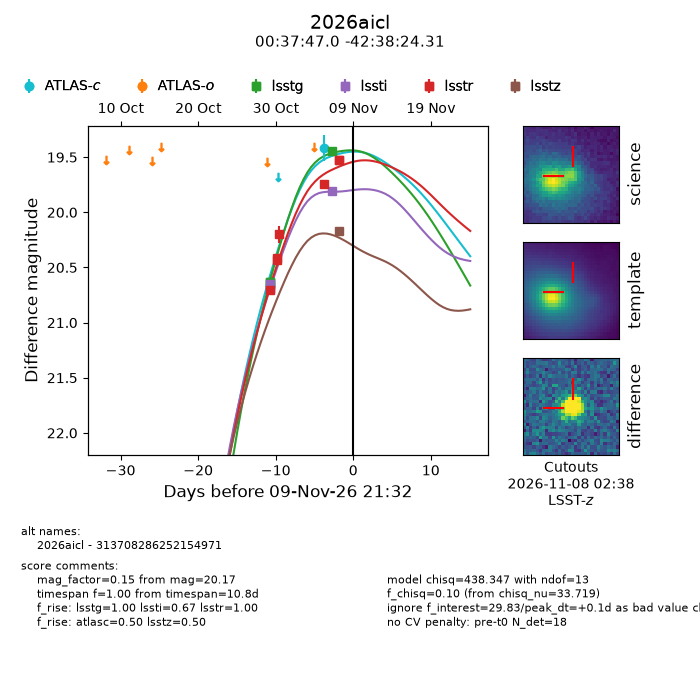
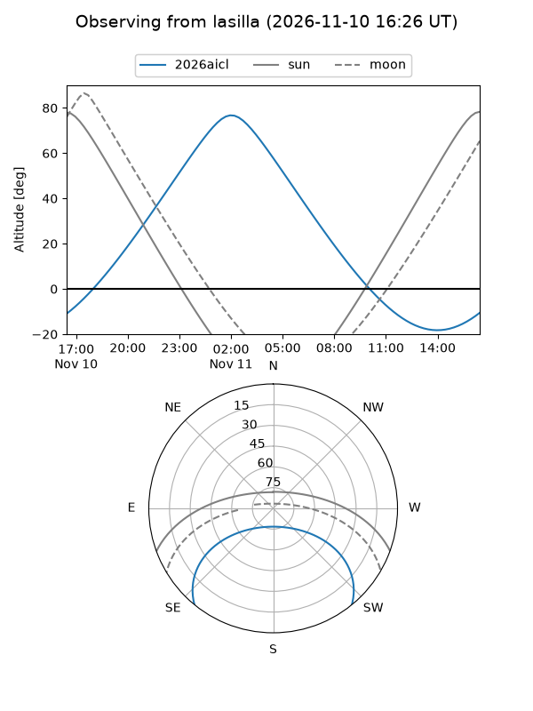
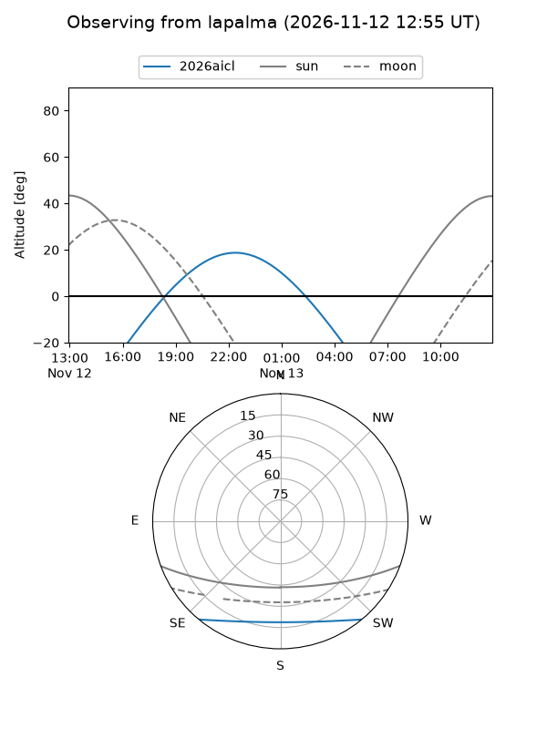
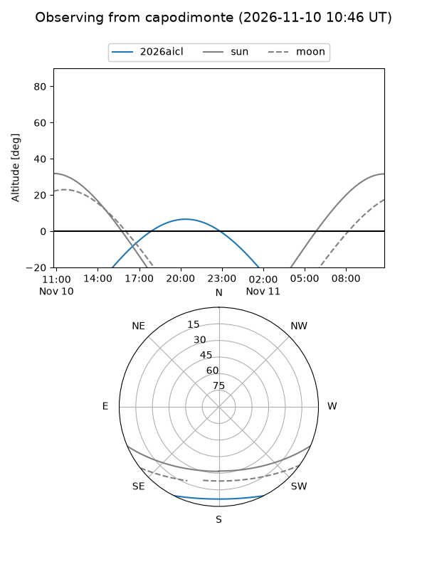
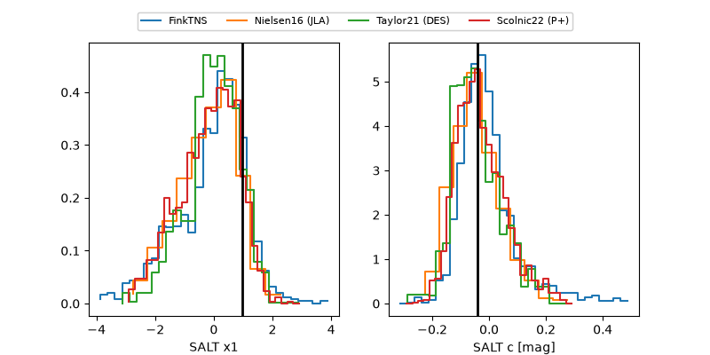

2026aicl
Target 2026aicl at 2026-11-09 21:34
Aliases and brokers:
FINK-LSST: lsst.fink-portal.org/313708286252154971
Lasair-LSST: lasair.lsst.ac.uk/objects/313708286252154971
ALeRCE-LSST: lsst.alerce.online/object/313708286252154971?survey=lsst
YSE-PZ: ziggy.ucolick.org/yse/transient_detail/2026aicl
TNS name: wis-tns.org/object/2026aicl
Direct TNS query: direct search
alt names
313708286252154971 (broker_lsst,fink_lsst)
2026aicl (tns,yse)
Coordinates:
equatorial (ra, dec) = 9.4459,-42.64009
equatorial (HMS+DMS) = 00:37:47.02,-42:38:24.31
galactic (l, b) = (312.2130,-74.24122)
Flags:
peak dt: +0.1
Photometry:
last atlasc=19.42, lsstg=19.45, lssti=19.81, lsstr=19.52, lsstz=20.17
1 atlasc, 5 lsstg, 4 lssti, 7 lsstr, 1 lsstz detections
Lightcurve

Visibility



Additional plots
